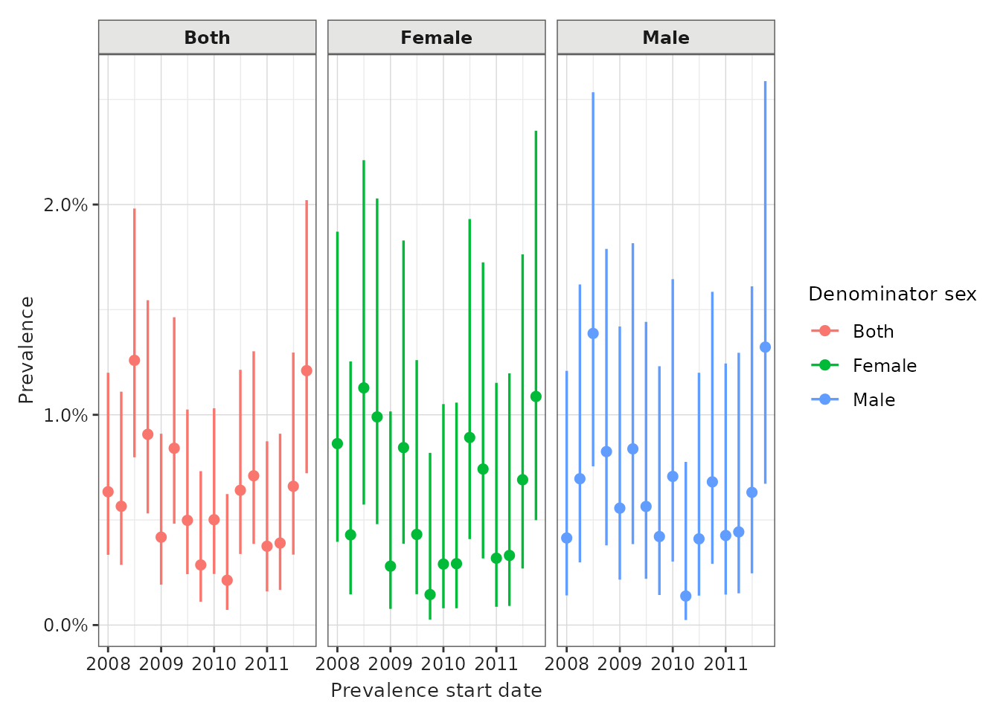
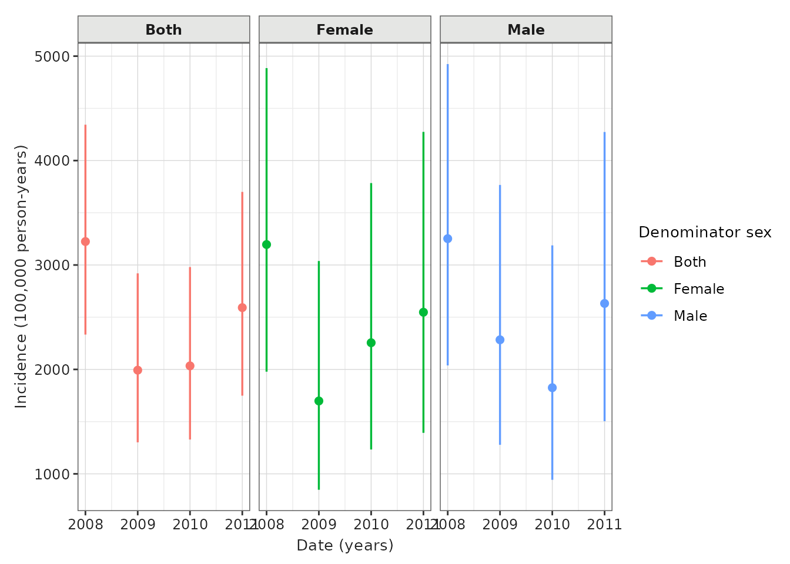

Introduction to IncidencePrevalence
a01_Introduction_to_IncidencePrevalence.RmdTo do a study of incidence and prevalence, the analytics functions from this package that you would interact with are
generateDenominatorCohortSet()andgenerateTargetDenominatorCohortSet()- these function will identify a set of denominator populations from the database population as a whole, the former, or based on individuals in a target cohort, the latterestimatePointPrevalence()andestimatePeriodPrevalence()- these function will estimate point and period prevalence for outcomes among denominator populationsestimateIncidence()- this function will estimate incidence rates for outcomes among denominator populations
Below, we show an example analysis to provide an broad overview of how this functionality provided by the IncidencePrevalence package can be used. More context and further examples for each of these functions are provided in later vignettes.
First, let’s load relevant libraries.
The IncidencePrevalence package works with data mapped to the OMOP
CDM and we will first need to connect to a database, after which we can
use the CDMConnector package to represent our mapped data as a cdm
reference. For this example though we´ll use a synthetic cdm reference
containing 50,000 hypothetical patients which we create using the
mockIncidencePrevalence() function.
cdm <- mockIncidencePrevalence(
sampleSize = 50000,
outPre = 0.2
)This example data already includes an outcome cohort.
Once we have a cdm reference, we can use the
generateDenominatorCohortSet() to identify a denominator
cohort to use later when calculating incidence and prevalence. In this
case we identify three denominator cohorts one with males, one with
females, and one with both males and females included. For each of these
cohorts only those aged between 18 and 65 from 2008 to 2012, and who had
365 days of prior history available are included.
cdm <- generateDenominatorCohortSet(
cdm = cdm,
name = "denominator",
cohortDateRange = c(as.Date("2008-01-01"), as.Date("2012-01-01")),
ageGroup = list(c(18, 65)),
sex = c("Male", "Female", "Both"),
daysPriorObservation = 365
)We can see that each of our denominator cohorts is in the format of an OMOP CDM cohort:
cdm$denominator %>%
glimpse()
#> Rows: ??
#> Columns: 4
#> Database: DuckDB v1.2.0 [unknown@Linux 6.8.0-1021-azure:R 4.4.3/:memory:]
#> $ cohort_definition_id <int> 1, 1, 1, 1, 1, 1, 1, 1, 1, 1, 1, 1, 1, 1, 1, 1, 1…
#> $ subject_id <int> 59, 89, 126, 136, 156, 200, 208, 261, 501, 533, 5…
#> $ cohort_start_date <date> 2008-06-24, 2008-01-01, 2008-01-01, 2008-01-01, …
#> $ cohort_end_date <date> 2012-01-01, 2009-08-06, 2010-05-29, 2010-02-18, …We can also see the settings associated with each cohort:
settings(cdm$denominator)
#> # A tibble: 3 × 11
#> cohort_definition_id cohort_name age_group sex days_prior_observation
#> <int> <chr> <chr> <chr> <dbl>
#> 1 1 denominator_cohor… 18 to 65 Male 365
#> 2 2 denominator_cohor… 18 to 65 Fema… 365
#> 3 3 denominator_cohor… 18 to 65 Both 365
#> # ℹ 6 more variables: start_date <date>, end_date <date>,
#> # requirements_at_entry <chr>, target_cohort_definition_id <int>,
#> # target_cohort_name <chr>, time_at_risk <chr>And we can also see the count for each cohort
cohortCount(cdm$denominator)
#> # A tibble: 3 × 3
#> cohort_definition_id number_records number_subjects
#> <int> <int> <int>
#> 1 1 1139 1139
#> 2 2 1068 1068
#> 3 3 2207 2207Now that we have our denominator cohorts, and using the outcome
cohort that was also generated by the
mockIncidencePrevalence() function, we can estimate
prevalence for each using the estimatePointPrevalence()
function. Here we calculate point prevalence on a yearly basis.
prev <- estimatePeriodPrevalence(
cdm = cdm,
denominatorTable = "denominator",
outcomeTable = "outcome",
interval = "quarters"
)
prev %>%
glimpse()
#> Rows: 380
#> Columns: 13
#> $ result_id <int> 1, 1, 1, 1, 1, 1, 1, 1, 1, 1, 1, 1, 1, 1, 1, 1, 1, 1,…
#> $ cdm_name <chr> "mock", "mock", "mock", "mock", "mock", "mock", "mock…
#> $ group_name <chr> "denominator_cohort_name &&& outcome_cohort_name", "d…
#> $ group_level <chr> "denominator_cohort_3 &&& cohort_1", "denominator_coh…
#> $ strata_name <chr> "overall", "overall", "overall", "overall", "overall"…
#> $ strata_level <chr> "overall", "overall", "overall", "overall", "overall"…
#> $ variable_name <chr> "Denominator", "Outcome", "Outcome", "Outcome", "Outc…
#> $ variable_level <chr> NA, NA, NA, NA, NA, NA, NA, NA, NA, NA, NA, NA, NA, N…
#> $ estimate_name <chr> "denominator_count", "outcome_count", "prevalence", "…
#> $ estimate_type <chr> "integer", "integer", "numeric", "numeric", "numeric"…
#> $ estimate_value <chr> "1420", "9", "0.00634", "0.00334", "0.012", "1417", "…
#> $ additional_name <chr> "prevalence_start_date &&& prevalence_end_date &&& an…
#> $ additional_level <chr> "2008-01-01 &&& 2008-03-31 &&& quarters", "2008-01-01…
Similarly we can use the estimateIncidence() function to
estimate incidence rates. Here we annual incidence rates, with 180 days
used for outcome washout windows.
inc <- estimateIncidence(
cdm = cdm,
denominatorTable = "denominator",
outcomeTable = "outcome",
interval = c("Years"),
outcomeWashout = 180
)
inc %>%
glimpse()
#> Rows: 224
#> Columns: 13
#> $ result_id <int> 1, 1, 1, 1, 1, 1, 1, 1, 1, 1, 1, 1, 1, 1, 1, 1, 1, 1,…
#> $ cdm_name <chr> "mock", "mock", "mock", "mock", "mock", "mock", "mock…
#> $ group_name <chr> "denominator_cohort_name &&& outcome_cohort_name", "d…
#> $ group_level <chr> "denominator_cohort_3 &&& cohort_1", "denominator_coh…
#> $ strata_name <chr> "overall", "overall", "overall", "overall", "overall"…
#> $ strata_level <chr> "overall", "overall", "overall", "overall", "overall"…
#> $ variable_name <chr> "Denominator", "Outcome", "Denominator", "Denominator…
#> $ variable_level <chr> NA, NA, NA, NA, NA, NA, NA, NA, NA, NA, NA, NA, NA, N…
#> $ estimate_name <chr> "denominator_count", "outcome_count", "person_days", …
#> $ estimate_type <chr> "integer", "integer", "numeric", "numeric", "numeric"…
#> $ estimate_value <chr> "1634", "43", "487065", "1333.511", "3224.57", "2333.…
#> $ additional_name <chr> "incidence_start_date &&& incidence_end_date &&& anal…
#> $ additional_level <chr> "2008-01-01 &&& 2008-12-31 &&& years", "2008-01-01 &&…